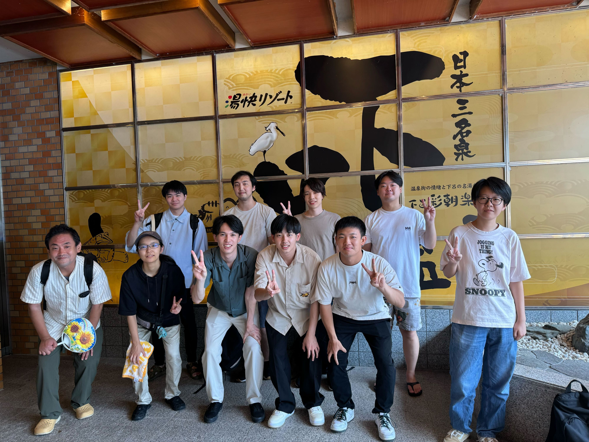

1日目：湯快リゾートでのんびり
初日は、湯快リゾートに宿泊しました。チェックイン後、さっそく研究室のメンバーと楽しい時間を過ごしました。
- 夕食：ビュッフェ形式の夕食でした。ご当地メニューや季節の食材を堪能しました
- 麻雀大会：頭を使う研究の合間に、麻雀で頭を休めました。白熱した対局に、時間を忘れて没頭！
- ゲーム大会：みんなで盛り上がれるパーティーゲームで、普段見られない一面も。笑いが絶えません。
- 露天風呂：日々の疲れを癒す最高の時間。星空を眺めながらの入浴は格別でした。

9月17日～18日で、研究室のメンバーと一緒に岐阜県の下呂市へ旅行に行ってきました。自然豊かな環境でリラックスし、楽しい思い出をたくさん作ることができました。そんな2日間の旅の様子を記録します。
初日は、湯快リゾートに宿泊しました。チェックイン後、さっそく研究室のメンバーと楽しい時間を過ごしました。
2日目は、ホテル近くの合掌村を訪れました。伝統的な建築と豊かな自然に囲まれ、心が洗われる思いでした。

充実した2日間を過ごし、心も体もリフレッシュできました。研究室のメンバーとの絆も深まり、新たな意欲を持って研究に取り組める気がします。次はどんな発見があるでしょうか。楽しみです！